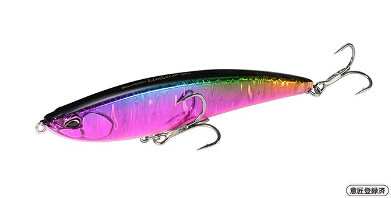
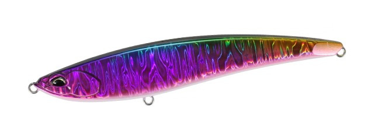
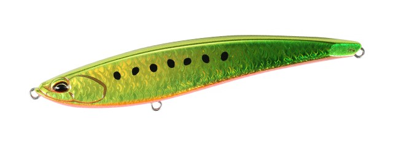
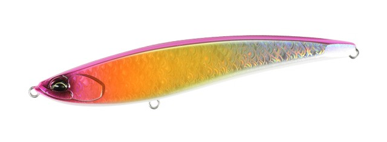
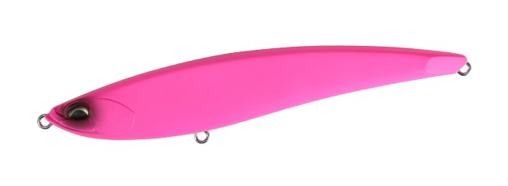

Limber iF127S(リンバーif127)
リンバーiF127SはDUOのシンキングミノーです。
性能強化を突き詰めた必然のサイズアップこそがリンバーiF127Sの本質

画像出典:DUO公式HP
スペック
- メーカー
- DUO
- 長さ
- 127 mm
- 重さ
- 26 g
- フック
- #3×2
- リング
- #3
- レンジ
- 中層
- タイプ
- ミノー
- 沈下タイプ
- シンキング
- アクション
- S字スラローム
- ターゲット
- フラットフィッシュ
- 価格
- 2530円(税込)
- 発売日
- 2026-04-14
▼今すぐチェック

リンバーiF127Sの特徴
無限の飛距離と強烈なアピールで大型魚をねじ伏せる"インパクト"強化モデル
-
圧倒的な飛距離(インフィニティ・フライト)
「iF」は「インフィニティ・フライト」の略で、重心移動システムによる高飛距離モデルになっています。
-
スリムロングボディによる高いアピール食
サイズは127mmで「ロングかつスリム」な形状へ。従来モデルよりフラットな面積が広がったため、水中での存在感や反射によるアピール力が向上。
-
大型魚にも対応したフック設定
シリーズ1の大型フックにより、座布団ヒラメやブリクラスの青物、ランカーシーバス、オオニベといった大型ターゲットにも対応できます。
リンバーiF127Sの使い方・得意な状況
使い方はとにかく「中層」狙い。ただ巻きで、中層をトレースできる設定になっています。
イワシなどの中層系ベイトがいる時にオススメです。
飛距離とアピール力を活かして、朝マズメに広範囲で魚を素早く探したいときに最適です。
水深1mほどのシャローエリアでも使いやすい設定です。
「難しく考えず、使いたいときに使う」のが一番ですが、「中層」「広範囲サーチ」「大物狙い」を意識するとよいでしょう。
ワンポイント
魚はいそうなのに、ミノーを投げていてもなかなか釣れないときに、投げてみることをオススメします。
他のミノーにはない、大きく描くS字アクションがスレた大型魚の捕食スイッチを入れることができます。
飛距離も良く、ただ巻きで中層を引けるのはサーフにおいてかなり強い武器ですね。
人気カラー
リンバーiF127Sは15色のラインナップ。その中でも人気カラーを選抜して紹介します。

UVピンクフェイクベイトリンバーiFの代表カラーで、きれいなグラデーションと強いフラッシングが特徴

UVライムサーディンPBグリーンカラーは濁りのある時に強いカラー

UVピンクサンライズGBUV発光と蓄光グローが共存したカラーで、マズメ時にベスト

マットピンクなぜかこれでしか釣れない時がある。オープンエリアでは1本は欲しいカラー。
画像出典:DUO公式HP
リンバーiF127Sに似ているルアー
- リンバー115S
- リンバー95S